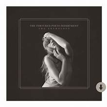

El undécimo álbum de estudio de Taylor Swift, un proyecto doble que explora emociones intensas,
poesía y confesiones personales.
Portada del álbum

Historia
Lanzado el 19 de abril de 2024, este álbum sorprendió con 31 canciones divididas en dos partes.
Es considerado uno de los proyectos más ambiciosos de Taylor, con letras que mezclan vulnerabilidad,
ironía y referencias literarias.
Su lanzamiento rompió récords de streaming en plataformas digitales.
Aunque es un álbum reciente, The Tortured Poets Department ya ha recibido múltiples elogios.
Fue destacado por romper récords de streaming en su primera semana y se espera que obtenga nominaciones importantes en los próximos premios Grammy.
Curiosidades
Es el álbum más largo de Taylor, con 31 canciones.
Incluye colaboraciones con Post Malone y Florence + The Machine.
Muchos fans lo consideran una obra literaria por sus referencias poéticas.
El lanzamiento fue acompañado de una edición especial con portadas alternativas.